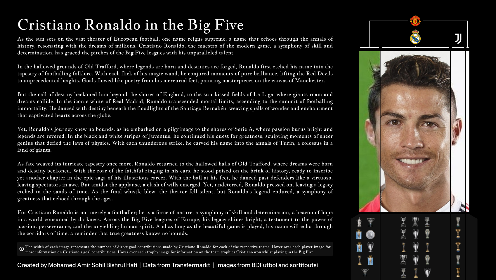

Cristiano Ronaldo in the Big Five
A career told through the width of a portrait.

The Problem
A plain timeline doesn't really do justice to what Cristiano Ronaldo has achieved in football. It also doesn't make it easy to actually compare relative contribution across clubs, or connect individual output to what each team won during that period. This project was conceived aiming to do both.
The Approach
Four portrait images, one for each spell at a Big Five club, sit side by side, with each image's width directly encoding total goal contributions at that particular spell, turning the layout itself into a data encoding rather than a decorative graphic. Hovering over each of these images shows a breakdown of goals and assists at each spell. Trophy iconography beneath each portrait carries its own data too: hovering reveals which specific team trophies were won during that spell. Long-form narrative prose frames the whole piece, blending editorial writing directly with the data encoding.
The Outcome
The width-based encoding makes relative club contribution legible at a glance, before a single number is read. The widest panel visibly signals where the most direct goal involvement happened, without needing an accompanying bar chart. Pairing that with hoverable detail lets a viewer connect individual output to team success at each club directly on the same visual.
The layout itself is a data encoding, not a decorative graphic.